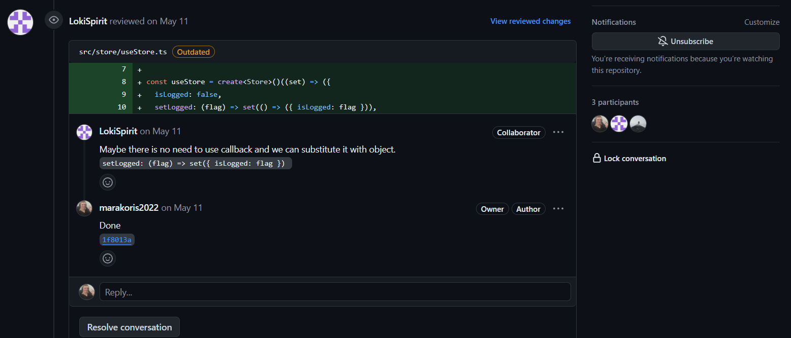

Презентация
RSTeam Games Store
Влияние совместной работы
- Постоянная моральная и мотивационная поддержка.
- Анализ кода и помощь в исправлении ошибок.
- Совместный подход к решению проблем.
- Разделение ответственности для более продуктивной разработки проекта.
Инновации благодаря командной работе
Использование доски Канбан
Канбан — это метод управления проектами и задачами, который помогает визуализировать рабочий процесс и улучшать его с течением времени.
Колонки:
- To Do: Задачи, которые запланированы для выполнения.
- In Progress: Задачи, над которыми в настоящее время работает команда.
- Wait for Approval: Задачи, которые ожидают Code Review и Approval.
- Done: Завершенные задачи.
Карточки:
Каждая карточка содержит в себе четкое описание поставленной задачи. Ссылка на ТЗ. А так же закрепляется человек который ответственен за выполнение данной задачи.
GitHub Projects:
Прямое связывание задач с репозиторием. Возможность автоматизации перемещения задач по доске с использованием GitHub Actions. Интеграция с Pull Requests и Issues.
Коммуникация внутри команды
Discord — это платформа для голосовой, видео и текстовой связи.
- Ежедневные Встречи: Обязательные встречи каждый день в 20:00.
- Цель: Обсудить текущие задачи, прогресс и возникающие препятствия.
- Продолжительность: 15-30 минут.
Успешный Митинг:
- Регулярное Обновление Статуса разработки.
- Коллективный просмотр этапа разработки.
- Совместное кодинг сложных моментов разработки
Аналитика GitHub
Аналитика GitHub предоставляет ценные данные о вкладе разработчиков и общем состоянии проекта.
- Commits : Количество коммитов в репозитории за определенный период времени.
- Pull Requests (PR): Количество созданных, закрытых и принятых PR.
- Issues : Количество открытых, закрытых и вновь созданных issues.
- Contributors: Количество активных контрибьюторов за определенный период.
Пример Pull Request
- Создание ветки
- Решение задачи
- Обновление и мердж основной ветки
- Разрешение конфликтов
- Проведение code review
- Внесение исправлений
- Слияние веток.
Pull Request

Review Process
Документация README
Обзор технологического стека
- React: Библиотека для построения UI.
- TypeScript: Статическая типизация для JavaScript.
- Vite: Быстрая сборка и разработка.
- React Router DOM: Маршрутизация в React-приложениях.
- Zustand: Управление состоянием.
- Axios: HTTP-клиент для выполнения запросов.
- Formik: Управление состоянием форм и валидация.
- Classnames: Условное объединение классов CSS.
- React Icons: Иконки для React.
- React Paginate: Пагинация для React.
- React Slider: Слайдер для React.
- Swiper: Слайдер-карусель.
- ESLint: Линтинг кода.
- Prettier: Форматирование кода.
- Vitest: Фреймворк для тестирования.
- Testing Library: Тестирование компонентов React.
- Sass: Стилизация с использованием Sass.
- Husky: Настройка git-хуков.
- jsdom: Эмуляция браузерной среды для тестирования.
- React Content Loader: Генерация контент-загрузчиков (Skeletons).